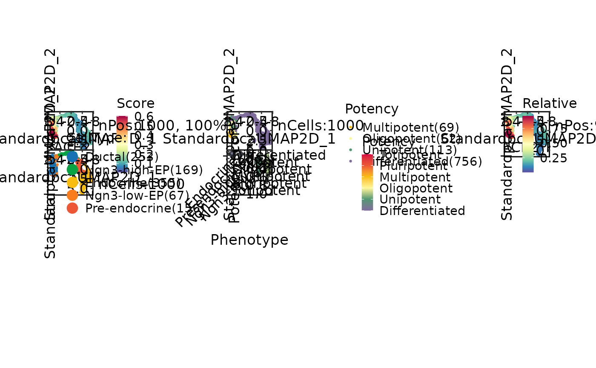

Run CytoTRACE 2
Usage
RunCytoTRACE(object, ...)
# S3 method for class 'Seurat'
RunCytoTRACE(
object,
assay = NULL,
layer = c("counts", "data"),
species = c("Homo_sapiens", "Mus_musculus"),
batch_size = 10000,
smooth_batch_size = 1000,
parallelize_models = TRUE,
parallelize_smoothing = TRUE,
cores = 1,
seed = 11,
verbose = TRUE,
...
)
# Default S3 method
RunCytoTRACE(
object,
species = c("Homo_sapiens", "Mus_musculus"),
batch_size = 10000,
smooth_batch_size = 1000,
parallelize_models = TRUE,
parallelize_smoothing = TRUE,
cores = 1,
seed = 11,
verbose = TRUE,
...
)Arguments
- object
An object. This can be a Seurat object or a matrix-like object (genes as rows, cells as columns).
- ...
Additional arguments to be passed to
CytoTRACE2::cytotrace2.- assay
Which assay to use. If
NULL, the default assay of the Seurat object will be used.- layer
Which layer to use. Default is
"counts".- species
The species of the input data. Currently supported values are
"human"and"mouse". Default is"human".- batch_size
The number of cells to process at once, including subsampling for KNN smoothing. No subsampling if
NULL. Default is10000(recommended for input data size > 10K cells).- smooth_batch_size
The number of cells to subsample further within the batch_size for the smoothing by diffusion step of the pipeline. No subsampling if
NULL. Default is1000(recommended for input data size > 1K cells).- parallelize_models
Whether to run the prediction function on models in parallel on multiple threads. Default is
TRUE.- parallelize_smoothing
Whether to run the smoothing function on subsamples in parallel on multiple threads. Default is
TRUE.- cores
The number of cores to use for parallelization with foreach::foreach. Default is
1.- seed
Random seed for reproducibility. Default is
11.- verbose
Whether to print the message. Default is
TRUE.
Value
When the input is a Seurat object, the function returns a Seurat object with the following metadata columns added:
CytoTRACE2_Score: The final predicted cellular potency score (0-1)CytoTRACE2_Potency: The final predicted cellular potency category (Differentiated, Unipotent, Oligopotent, Multipotent, Pluripotent, Totipotent)CytoTRACE2_Relative: The predicted relative order (normalized to 0-1)preKNN_CytoTRACE2_Score: The potency score before KNN smoothingpreKNN_CytoTRACE2_Potency: The potency category before KNN smoothing
When the input is a matrix or data.frame, the function returns a data.frame with the same columns as above, with cell IDs as row names.
Examples
if (thisplot::check_ci_env()) {
data(pancreas_sub)
pancreas_sub <- standard_scop(pancreas_sub)
pancreas_sub <- RunCytoTRACE(
pancreas_sub,
species = "Mus_musculus"
)
CytoTRACEPlot(
pancreas_sub,
group.by = "CellType"
)
}
#> ℹ [2026-01-30 17:03:22] Start standard scop workflow...
#> ℹ [2026-01-30 17:03:22] Checking a list of <Seurat>...
#> ! [2026-01-30 17:03:22] Data 1/1 of the `srt_list` is "unknown"
#> ℹ [2026-01-30 17:03:22] Perform `NormalizeData()` with `normalization.method = 'LogNormalize'` on the data 1/1 of the `srt_list`...
#> ℹ [2026-01-30 17:03:24] Perform `Seurat::FindVariableFeatures()` on the data 1/1 of the `srt_list`...
#> ℹ [2026-01-30 17:03:25] Use the separate HVF from srt_list
#> ℹ [2026-01-30 17:03:25] Number of available HVF: 2000
#> ℹ [2026-01-30 17:03:25] Finished check
#> ℹ [2026-01-30 17:03:26] Perform `Seurat::ScaleData()`
#> ℹ [2026-01-30 17:03:26] Perform pca linear dimension reduction
#> ℹ [2026-01-30 17:03:27] Perform `Seurat::FindClusters()` with `cluster_algorithm = 'louvain'` and `cluster_resolution = 0.6`
#> ℹ [2026-01-30 17:03:27] Reorder clusters...
#> ℹ [2026-01-30 17:03:27] Perform umap nonlinear dimension reduction
#> ℹ [2026-01-30 17:03:27] Non-linear dimensionality reduction (umap) using (Standardpca) dims (1-50) as input
#> ℹ [2026-01-30 17:03:32] Non-linear dimensionality reduction (umap) using (Standardpca) dims (1-50) as input
#> ✔ [2026-01-30 17:03:36] Run scop standard workflow completed
#> ◌ [2026-01-30 17:03:36] Running CytoTRACE2
#> cytotrace2: Started loading data
#> Dataset contains 15998 genes and 1000 cells.
#> The number of cells in your dataset is less than 1000. Fast mode has been disabled.
#> The passed subsample size is greater than the number of cells in dataset.
#> Now setting subsample size to 1000
#> cytotrace2: Running on 1 subsample(s) approximately of length 1000
#> cytotrace2: Started running on subsample(s). This will take a few minutes.
#> cytotrace2: Started preprocessing.
#> 12486 input genes mapped to model genes.
#> cytotrace2: Started prediction.
#> This section will run using 1 / 4 core(s).
#> cytotrace2: Started postprocessing.
#> cytotrace2: Running with slow mode (subsamples are processed sequentially)
#> Number of cores for KNN: 1
#> cytotrace2: Finished
#> ✔ [2026-01-30 17:04:44] CytoTRACE2 computed successfully
